1 Память и адреса
Введение
Память является важнейшим ресурсом, требующим тщательного управления со стороны многозадачной операционной системы. Распределению подлежит вся оперативная память, не занятая операционной системой. Обычно ОС располагается в самых младших адресах, однако может занимать и самые старшие адреса.
Функциями ОС по управлению памятью являются:
- отслеживание свободной и занятой памяти
- выделение памяти процессам и освобождение памяти при завершении процессов
- вытеснение процессов из оперативной памяти на диск, когда размеры основной памяти не достаточны для размещения в ней всех процессов, и возвращение их в оперативную память, когда в ней освобождается место
- настройка адресов программы на конкретную область физической памяти.
Типы адресов
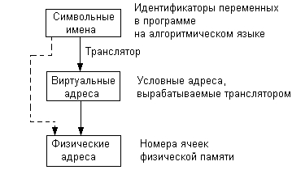Для идентификации переменных и команд используются символьные имена (метки), виртуальные адреса и физические адреса.
Символьные имена присваивает пользователь при написании программы на алгоритмическом языке или ассемблере.
Виртуальные адреса вырабатывает транслятор, переводящий программу на машинный язык. Так как во время трансляции в общем случае не известно, в какое место оперативной памяти будет загружена программа, то транслятор присваивает переменным и командам виртуальные (условные) адреса, обычно считая по умолчанию, что программа будет размещена, начиная с нулевого адреса.
Совокупность виртуальных адресов процесса называется виртуальным адресным пространством. Каждый процесс имеет собственное виртуальное адресное пространство. Максимальный размер виртуального адресного пространства ограничивается разрядностью адреса, присущей данной архитектуре компьютера, и, как правило, не совпадает с объемом физической памяти, имеющимся в компьютере.
Физические адреса соответствуют номерам ячеек оперативной памяти, где в действительности расположены или будут расположены переменные и команды. Переход от виртуальных адресов к физическим может осуществляться двумя способами. В первом случае замену виртуальных адресов на физические делает специальная системная программа - перемещающий загрузчик. Перемещающий загрузчик на основании имеющихся у него исходных данных о начальном адресе физической памяти, в которую предстоит загружать программу, и информации, предоставленной транслятором об адресно-зависимых константах программы, выполняет загрузку программы, совмещая ее с заменой виртуальных адресов физическими.
Второй способ заключается в том, что программа загружается в память в неизмененном виде в виртуальных адресах, при этом операционная система фиксирует смещение действительного расположения программного кода относительно виртуального адресного пространства. Во время выполнения программы при каждом обращении к оперативной памяти выполняется преобразование виртуального адреса в физический.
2 Методы распределения памяти
Классификация
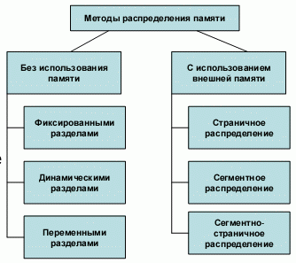Все методы управления памятью могут быть разделены на два класса: методы, которые используют перемещение процессов между оперативной памятью и диском, и методы, которые не делают этого.
2.1 Без перемещения данных на диск
Распределение фиксированными разделами
Самым простым способом управления оперативной памятью является разделение ее на несколько разделов фиксированной величины. Это может быть выполнено вручную оператором во время старта системы или во время ее генерации.
При очевидном преимуществе - простоте реализации - данный метод имеет существенный недостаток - жесткость. Так как в каждом разделе может выполняться только одна программа, то уровень мультипрограммирования заранее ограничен числом разделов не зависимо от того, какой размер имеют программы.
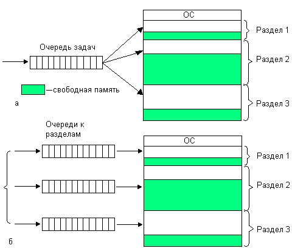
Распределение разделами фиксированной величины
В этом случае память машины не делится заранее на разделы. Сначала вся память свободна. Каждой вновь поступающей задаче выделяется необходимая ей память. Если достаточный объем памяти отсутствует, то задача не принимается на выполнение и стоит в очереди.
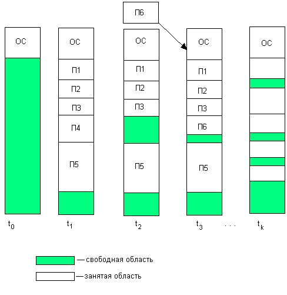
Перемещаемые разделы
Одним из методов борьбы с фрагментацией является перемещение всех занятых участков в сторону старших либо в сторону младших адресов, так, чтобы вся свободная память образовывала единую свободную область.
В дополнение к функциям, которые выполняет ОС при распределении памяти переменными разделами, в данном случае она должна еще время от времени копировать содержимое разделов из одного места памяти в другое, корректируя таблицы свободных и занятых областей. Эта процедура называется "сжатием".
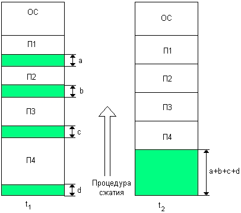
2.2 С перемещением на диск
Понятие виртуальной памяти
Уже достаточно давно пользователи столкнулись с проблемой размещения в памяти программ, размер которых превышал имеющуюся в наличии свободную память. Решением было разбиение программы на части, называемые оверлеями. 0-ой оверлей начинал выполняться первым. Когда он заканчивал свое выполнение, он вызывал другой оверлей. Все оверлеи хранились на диске и перемещались между памятью и диском средствами операционной системы. Однако разбиение программы на части и планирование их загрузки в оперативную память должен был осуществлять программист.
Развитие методов организации вычислительного процесса в этом направлении привело к появлению метода, известного под названием виртуальная память. Виртуальным называется ресурс, который пользователю или пользовательской программе представляется обладающим свойствами, которыми он в действительности не обладает.
Таким образом, виртуальная память - это совокупность программно-аппаратных средств, позволяющих пользователям писать программы, размер которых превосходит имеющуюся оперативную память; для этого виртуальная память решает следующие задачи:
- размещает данные в запоминающих устройствах разного типа, например, часть программы в оперативной памяти, а часть на диске;
- перемещает по мере необходимости данные между запоминающими устройствами разного типа, например, подгружает нужную часть программы с диска в оперативную память;
- преобразует виртуальные адреса в физические.
Все эти действия выполняются автоматически, без участия программиста, то есть механизм виртуальной памяти является прозрачным по отношению к пользователю.
Наиболее распространенными реализациями виртуальной памяти является страничное, сегментное и странично-сегментное распределение памяти, а также свопинг.
Страничное распределение
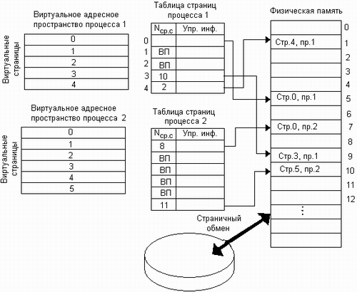Виртуальное адресное пространство каждого процесса делится на части одинакового, фиксированного для данной системы размера, называемые виртуальными страницами. В общем случае размер виртуального адресного пространства не является кратным размеру страницы, поэтому последняя страница каждого процесса дополняется фиктивной областью.
Вся оперативная память машины также делится на части такого же размера, называемые физическими страницами (или блоками).
Размер страницы обычно выбирается равным степени двойки: 512, 1024 и т.д., это позволяет упростить механизм преобразования адресов.
При загрузке процесса часть его виртуальных страниц помещается в оперативную память, а остальные - на диск. Смежные виртуальные страницы не обязательно располагаются в смежных физических страницах. При загрузке операционная система создает для каждого процесса информационную структуру - таблицу страниц, в которой устанавливается соответствие между номерами виртуальных и физических страниц для страниц, загруженных в оперативную память, или делается отметка о том, что виртуальная страница выгружена на диск. Кроме того, в таблице страниц содержится управляющая информация, такая как признак модификации страницы, признак невыгружаемое (выгрузка некоторых страниц может быть запрещена), признак обращения к странице (используется для подсчета числа обращений за определенный период времени) и другие данные, формируемые и используемые механизмом виртуальной памяти.
Преобразование виртуального адреса в физический
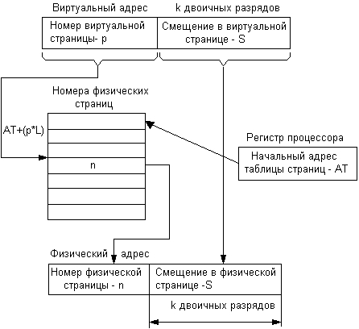Пусть произошло обращение к памяти по некоторому виртуальному адресу. Аппаратными схемами процессора выполняются следующие действия:
- Из специального регистра процессора извлекается адрес AT таблицы страниц активного процесса. На основании начального адреса таблицы страниц, номера виртуальной страницы р (старшие разряды виртуального адреса) и длины отдельной записи в таблице страниц L (системная константа) определяется адрес нужного дескриптора в таблице страниц: a=AT+(pxL).
- Из этого дескриптора извлекается номер соответствующей физической страницы — n.
- К номеру физической страницы присоединяется смещение s (младшие разряды виртуального адреса).
Типичная машинная инструкция требует 3-4 обращений к памяти (выборка команды, извлечение операндов, запись результата). И при каждом обращении происходит либо преобразование виртуального адреса в физический, либо обработка страничного прерывания. Время выполнения этих операций в значительной степени влияет на общую производительность вычислительной системы, поэтому столь большое внимание разработчиков уделяется оптимизации виртуальной памяти.
Сегментное распределение
При страничной организации виртуальное адресное пространство процесса делится механически на равные части. Это не позволяет дифференцировать способы доступа к разным частям программы (сегментам).
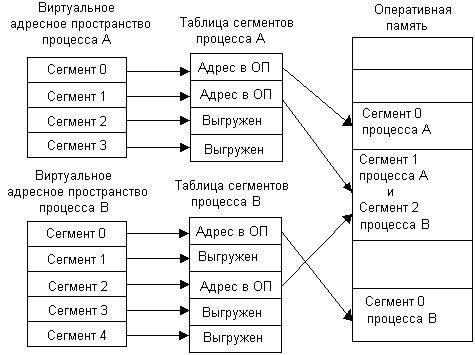
Виртуальное адресное пространство процесса делится на сегменты, размер которых определяется программистом с учетом смыслового значения содержащейся в них информации. Отдельный сегмент может представлять собой подпрограмму, массив данных и т.п. Иногда сегментация программы выполняется по умолчанию компилятором.
При загрузке процесса часть сегментов помещается в оперативную память (при этом для каждого из этих сегментов операционная система подыскивает подходящий участок свободной памяти), а часть сегментов размещается в дисковой памяти. Сегменты одной программы могут занимать в оперативной памяти несмежные участки. Во время загрузки система создает таблицу сегментов процесса (аналогичную таблице страниц), в которой для каждого сегмента указывается начальный физический адрес сегмента в оперативной памяти, размер сегмента, правила доступа, признак модификации, признак обращения к данному сегменту за последний интервал времени и некоторая другая информация. Если виртуальные адресные пространства нескольких процессов включают один и тот же сегмент, то в таблицах сегментов этих процессов делаются ссылки на один и тот же участок оперативной памяти, в который данный сегмент загружается в единственном экземпляре.
Система с сегментной организацией функционирует аналогично системе со страничной организацией: время от времени происходят прерывания, связанные с отсутствием нужных сегментов в памяти, при необходимости освобождения памяти некоторые сегменты выгружаются, при каждом обращении к оперативной памяти выполняется преобразование виртуального адреса в физический. Кроме того, при обращении к памяти проверяется, разрешен ли доступ требуемого типа к данному сегменту.
Недостатком данного метода распределения памяти является фрагментация на уровне сегментов и более медленное по сравнению со страничной организацией преобразование адреса.
На следующем рисунке приведена схема трансляции виртуального адреса в физический при сегментном распределении.
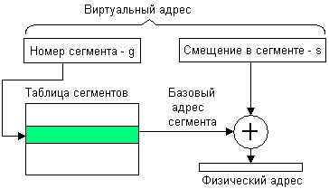
Странично-сегментное распределение
Виртуальное пространство процесса делится на сегменты, а каждый сегмент в свою очередь делится на виртуальные страницы, которые нумеруются в пределах сегмента. Оперативная память делится на физические страницы. Загрузка процесса выполняется операционной системой постранично, при этом часть страниц размещается в оперативной памяти, а часть на диске. Для каждого сегмента создается своя таблица страниц, структура которой полностью совпадает со структурой таблицы страниц, используемой при страничном распределении. Для каждого процесса создается таблица сегментов, в которой указываются адреса таблиц страниц для всех сегментов данного процесса. Адрес таблицы сегментов загружается в специальный регистр процессора, когда активизируется соответствующий процесс.
На рисунке показана схема преобразования виртуального адреса в физический для данного метода.
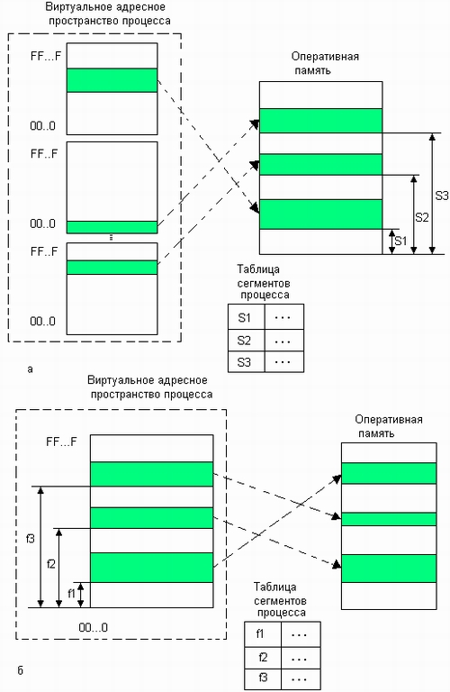
На следующем рисунке приведена схема трансляции виртуального адреса в физический при странично-сегментном распределении памяти.
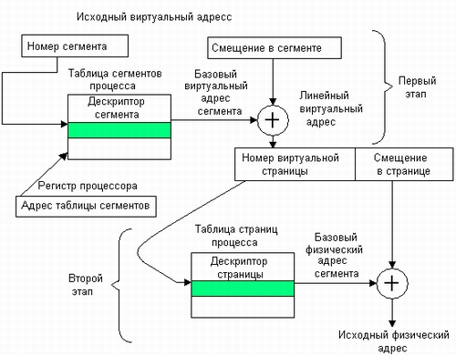
Своппинг
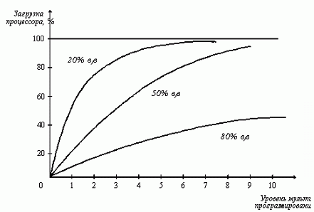Некоторые процессы (обычно находящиеся в состоянии ожидания) временно выгружаются на диск
Разновидностью виртуальной памяти является свопинг.
Из рисунка видно, что для загрузки процессора на 90% достаточно всего трех счетных задач. Однако для того, чтобы обеспечить такую же загрузку интерактивными задачами, выполняющими интенсивный ввод-вывод, потребуются десятки таких задач. Необходимым условием для выполнения задачи является загрузка ее в оперативную память, объем которой ограничен. В этих условиях был предложен метод организации вычислительного процесса, называемый свопингом.
В соответствии с этим методом некоторые процессы (обычно находящиеся в состоянии ожидания) временно выгружаются на диск. Планировщик операционной системы не исключает их из своего рассмотрения, и при наступлении условий активизации некоторого процесса, находящегося в области свопинга на диске, этот процесс перемещается в оперативную память. Если свободного места в оперативной памяти не хватает, то выгружается другой процесс.
При свопинге, в отличие от рассмотренных ранее методов реализации виртуальной памяти, процесс перемещается между памятью и диском целиком, то есть в течение некоторого времени процесс может полностью отсутствовать в оперативной памяти. Существуют различные алгоритмы выбора процессов на загрузку и выгрузку, а также различные способы выделения оперативной и дисковой памяти загружаемому процессу.
Кэш-память
Кэш-память - это способ организации совместного функционирования двух типов запоминающих устройств, отличающихся временем доступа и стоимостью хранения данных, который позволяет уменьшить среднее время доступа к данным за счет динамического копирования в "быстрое" ЗУ наиболее часто используемой информации из "медленного" ЗУ.
Память вычислительной машины представляет собой иерархию запоминающих устройств (внутренние регистры процессора, различные типы сверхоперативной и оперативной памяти, диски, ленты), отличающихся средним временем доступа и стоимостью хранения данных в расчете на один бит.
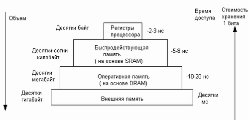